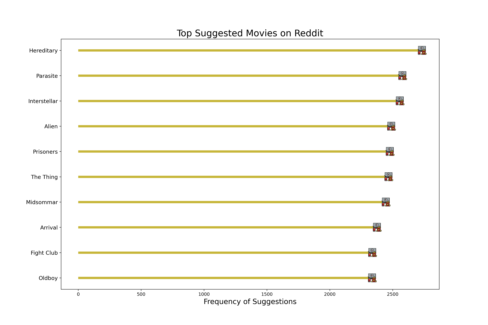

Natural Language Processing - Executive Summary
Understanding Digital Tastes in Cinema and Anime:
In the age of digital discourse, platforms like Reddit have become crucial in shaping the cultural conversation around entertainment. This section delves into the wealth of data on Reddit to extract what movies and anime are being suggested by users, transcending traditional top-ten lists by incorporating sentiment analysis and popularity metrics.
Reddit’s Favorite Films: A Community Perspective
Reddit’s MovieSuggestions subreddit is a lively place where movie buffs share their favorite picks. This isn’t just about what movies make the most money or get the best reviews from critics. It’s about people talking about all kinds of movies they love. You’ll find people talking just as excitedly about big-name movies like “Interstellar” and “Parasite” as they are about less mainstream ones like “Hereditary” and “The Thing.”
Sentiment Over Stars: Rethinking Movie Reviews
Instead of just counting how many thumbs up or stars a movie gets, a deeper look into Rotten Tomatoes reviews was taken to really understand how people feel about these movies. The goal was to figure out the general mood of the reviews — are people happy or unhappy with the movie? From this, a new kind of movie rating was made that doesn’t just look at how many people liked the movie, but also how strongly they felt about it.
|
|
Insights
The study found out that the movies people talk about on Reddit aren’t always the ones with the highest scores from professional reviewers. Movies that get people talking, like “Hereditary,” seem to hold a special place in Reddit users’ hearts. It shows that on Reddit, what really matters is how much a movie gets people to talk and think, and how it connects with them on a personal level.
Reddit is a place where the charm of a movie comes from many different things. It could be how well it tells its story, how much it makes people feel, or even how it fits in with what’s happening in the world. Reddit users love to find and talk about movies that mean something special to them — whether they’re indie films with a powerful message or big spectacles with lots of special effects.
This look into Reddit shows how online communities are changing the game when it comes to what makes a movie worth recommending. It’s not just about how many people say a movie is good; it’s also about the discussions and connections that movies start among viewers.
Diving Into Anime Favorites
After taking a close look at movie trends, the same curiosity was turned toward anime. The goal was to see which anime series are getting buzz on Reddit. Just like with movies, the chatter on Reddit was matched with reviews from MyAnimeList, a popular anime community site.
First, a list of the most-recommended anime on Reddit was made. It showed which anime series are getting the most love and suggestions from the Reddit crowd.
Popularity vs. Praise
An interesting trend emerged: the anime that were most popular didn’t always line up with the ones that got the best reviews. This showed that what people watch and talk about isn’t just about how good critics say it is. It’s also about what stories grab them, which characters they can’t forget, and how the anime fits into the culture at large.
|
|
Insights
In drawing conclusions from this exploration into anime’s popularity, it becomes evident that platforms like Reddit play a pivotal role in shaping how anime is perceived and appreciated. Here, the measure of an anime’s success transcends traditional critical ratings. It’s not just about the numbers or accolades it receives; instead, it hinges on the stories that linger in the minds of viewers, the characters that become almost real to them, and the emotional journeys these series facilitate.
Anime series that might not top the critics’ charts have nonetheless carved out their niches within online communities. They initiate discussions, spark debates, and often lead to the formation of dedicated fanbases. These are the shows that might not headline major anime conventions or feature prominently on award lists, but they inspire art, fan fiction, and deep discussions about themes and character development.
This phenomenon underscores a unique aspect of cultural consumption in the digital age. Communities like Reddit become melting pots of diverse opinions and tastes, where an anime’s worth is gauged not just by its technical excellence or narrative perfection but by its ability to connect, resonate, and stay relevant in the fast-paced online discourse.
Conclusion: The Heart of Storytelling in Movies and Anime on Reddit
The insights gathered from this exploration into movies and anime reveal a fascinating shift in how stories are valued and appreciated, especially in online communities like Reddit. In these digital spaces, a film or anime series’ appeal isn’t solely measured by the scores it gets from critics. Instead, it’s about the conversations they spark, the emotions they stir up, and the connections they forge with their audience.
Movies that stir up lively discussions, such as “Hereditary,” have a unique place in the hearts of Reddit users. It’s not just about being a blockbuster hit or having stunning visuals; it’s about how a story makes people think, feel, and relate to each other. These movies become more than just entertainment; they’re catalysts for conversation, thought, and sometimes, even change.
Similarly, in the world of anime, success on Reddit goes beyond traditional ratings. The most talked-about series aren’t always the ones that win awards or get perfect scores. They’re the ones that stay with viewers long after the screen goes dark, with characters and narratives that resonate on a deeply personal level. These series often spark in-depth discussions, fan creations, and strong communities of followers who find something special in their stories.
Both these analysis highlight a broader trend in the digital age: the true value of a movie or anime isn’t just in its technical achievements or expert reviews, but in its power to connect with people. In online forums like Reddit, a diverse tapestry of opinions and tastes comes together, making room for different kinds of stories to be discovered, discussed, and cherished.
This shift underscores the evolving nature of storytelling and audience engagement. In a world where traditional metrics of success are increasingly intertwined with digital discourse, platforms like Reddit are proving to be crucial spaces where the cultural significance of movies and anime is being redefined. Here, the impact of a story is measured not just in ratings or box office numbers, but in the richness of the discussions it inspires and the community it builds.